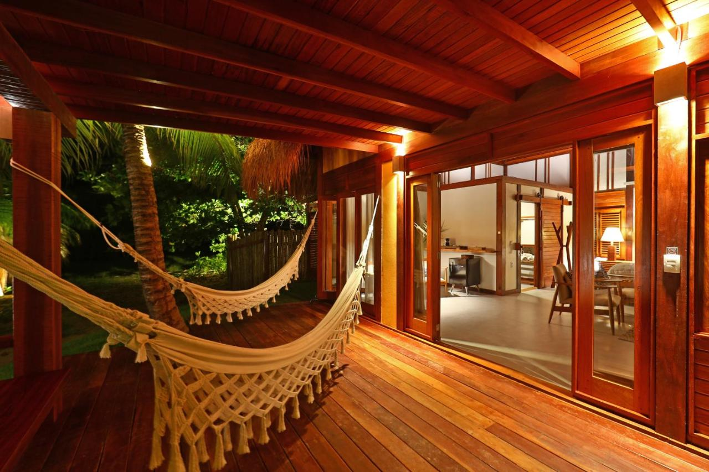

Os melhores hotéis e pousadas em Maceió são aqueles que oferecem piscina e café da manhã na cobertura, com vista para o mar. É o caso do hotel de Ipioca, pois oferece toda a estrutura para aproveitar o melhor da natureza.
Os hotéis de Maragogi também estão bem integrado à natureza, na frente do mar, tem bastante coqueiros e árvores e tem até um rio que passa por dentro do resort, tornando o contato com a natureza ainda maior.

Depois de passar o dia vendo as belezas de Porto de Pedras e cidades próximas, nada do que ter um hotel bem aconchegante do município e com vistas maravilhosas para acompanhar o anoitecer, o céu noturno estrelado e/ou até o raiar do sol.